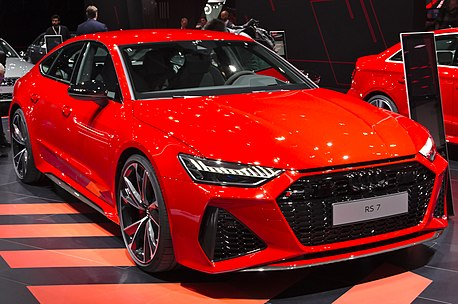
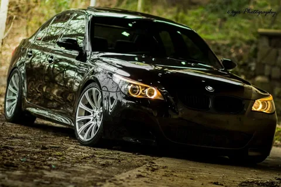

.webp)
.webp)
.webp)
Как появились машины.
Слово автомобиль в переводе с греческого означает ( autos сам и лат. mobilis двигающийся) «самодвижущийся». Предшественником автомобиля с бензиновым двигателем был паромобиль, точнее паровая телега, которую смастерил французский изобретатель Ж. Кюньо в 1769 году. Громоздкая машина двигалась со скоростью 2-4 км в час и могла перевозить до трех тонн груза. Для преодоления большого расстояния необходимо было делать остановки через каждые 15 минут для розжига топки, т. к. быстро падало давление в котле, кроме того, машина была плохо управляема, часто наезжала на дома и заборы. Уже в 1803 году Тривайтиком был создан в Великобритании первый паровой автомобиль. Задние колеса машины имели 2,5 метра в диаметре, между ними и задней частью рамы был помещен котел, который обслуживал кочегар, стоявший на запятках. Водитель сидел на высоком облучке. Кузов машины был подвешен на высоких рессорах. Машина вмещала в себя до десяти пассажиров и развивала скорость до 15 км в час, что было величайшим достижением для того времени. Автомобиль с бензиновым двигателем появился в 1864 году. Его изобрел австриец Зигфрид Маркус, что послужило мощным толчком для дальнейшего создания и развития транспортной техники. Проводя опыты, связанные с пиротехникой, он поджог смесь паров воздуха и бензина электрической искрой, в результате чего произошел мощный взрыв. Вскоре после этого, ему удалось создать двухтактный бензиновый двигатель с электрической системой зажигания, который был установлен на повозку. Работая в этом направлении, Маркус создает в 1875 году более совершенную машину.
|
Audi RS7 Audi RS 7 — спортивный пятидверный фастбэк класса Гран Туризмо выпускаемый подразделением Audi Sport GmbH на платформе Audi A7. Автомобиль был представлен 16 января 2013 года на Североамериканском международном салоне в Детройте. |
 |
|  |
|
|
WAGEN.BY/Авто из Европы